Prime Stack Defect Report
Course: Software Validation, Verification and Security Testing
Application under test: Frost Inventory and Shopping System
Team: Prime Stack
Environment: Local backend http://localhost:3000, frontend http://localhost:4200
Report date: 18 May 2026
1. Defect Origin Summary
Not every defect came from the same test type. DEF-001 and DEF-002 were confirmed by backend functional tests. DEF-005, DEF-006, and DEF-007 come from security test design/scripted security checks. DEF-008 comes from the ZAP scan/header verification. DEF-003 and DEF-004 are source-code review/API robustness defects.
| ID | Title | Origin | Severity | Status |
|---|---|---|---|---|
| DEF-001 | Missing/invalid email returns 500 instead of 400 | Functional tests TC-FUNC-002, TC-FUNC-008 | Medium | Fixed |
| DEF-002 | Template literal bug in getPurchaseByUserId | Functional test TC-FUNC-032 | Medium | Fixed |
| DEF-003 | SupplierRoute POST has no error handling | Source-code review | Medium | Fixed |
| DEF-004 | Login route hardcodes status 500 | Functional/API error-handling review | Medium | Fixed |
| DEF-005 | Mass assignment allows any user to register as admin | Security test ST-005 | Critical | Fixed |
| DEF-006 | /User/users exposes all user data without authentication | Security test ST-007 and route review | High | Fixed |
| DEF-007 | XSS payload stored in database without sanitization | Security test ST-003 | Medium | Fixed |
| DEF-008 | Missing security headers | ZAP scan/header verification | Low | Fixed |
2. Functional Test Evidence Summary
Before the fixes, the functional suite result was:
```text
Test Suites: 2 failed, 2 passed, 4 total
Tests: 3 failed, 33 passed, 36 total
```
After fixing the functional and API defects, the functional suite result was:
```text
Test Suites: 4 passed, 4 total
Tests: 36 passed, 36 total
```
After fixing the security defects, the k6 security result was:
```text
checks_succeeded: 100.00% 7 out of 7
checks_failed: 0.00% 0 out of 7
```
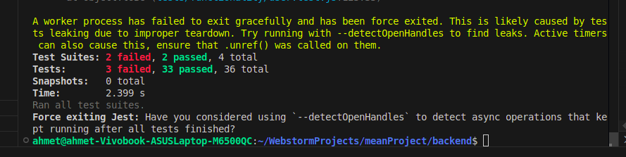
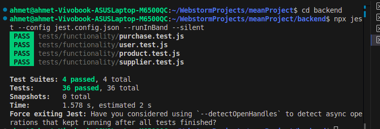
DEF-001: Missing/Invalid Email Returns 500 Instead of 400
Origin
Functional testing. Confirmed by:
TC-FUNC-002: should reject registration with missing emailTC-FUNC-008: should reject invalid email format
Details
| Field | Value |
|---|---|
| Severity | Medium |
| Status | Fixed |
| Test file | backend/tests/functionality/user.test.js |
| Source files | backend/domain/user/valueObjects/Email.js, backend/api/UserRoute.js |
Before the fix, Email.js threw plain Error objects. UserRoute.js checks error.statusCode; plain errors do not have that property, so the route fell back to 500.
Before:
```js
throw new Error("Email required");
throw new Error("Invalid email format");
```
After:
```js
throw new ValidationError("Email required");
throw new ValidationError("Invalid email format");
```
The route behavior then correctly maps the validation failure to 400 Bad Request.
Evidence
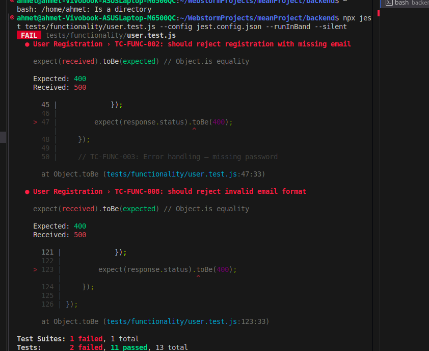
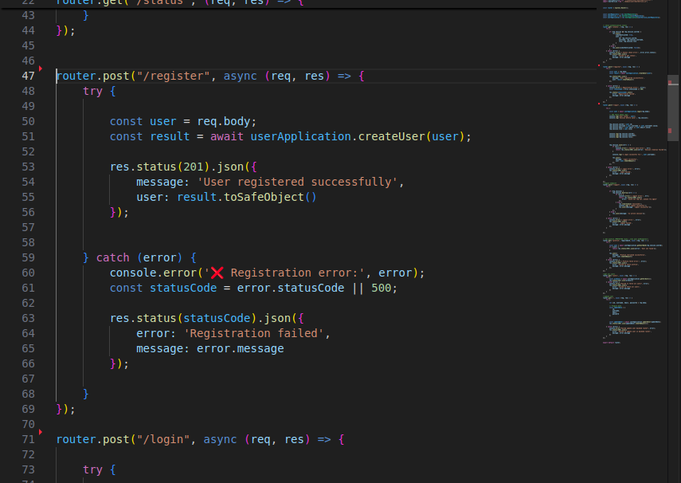
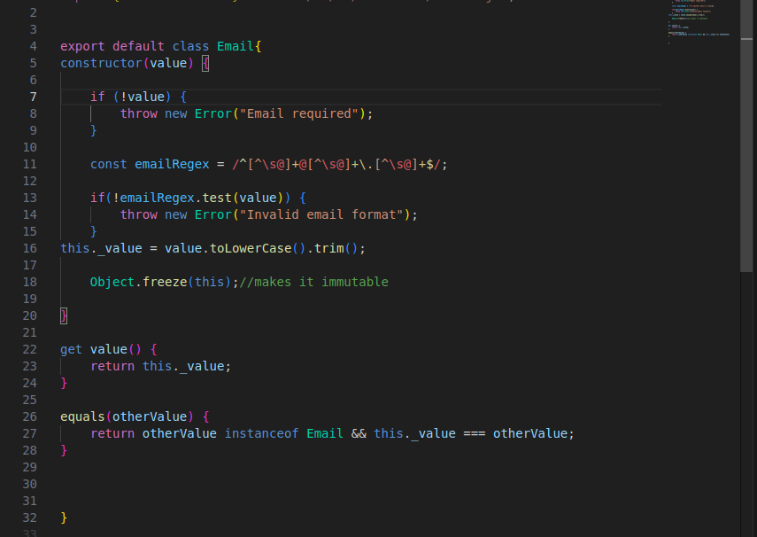
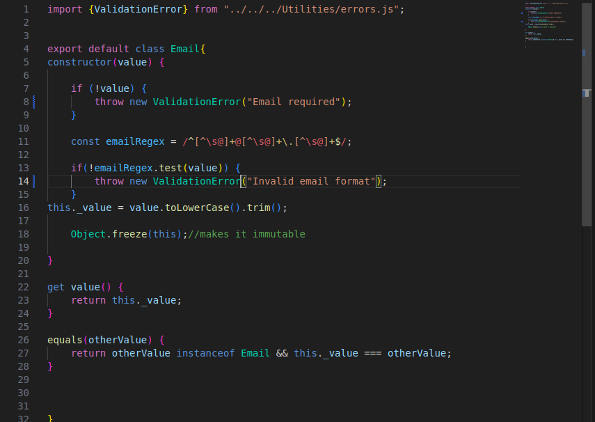
DEF-002: Template Literal Bug in getPurchaseByUserId
Origin
Functional testing. Confirmed by:
TC-FUNC-032: should return purchases for a valid user id
Details
| Field | Value |
|---|---|
| Severity | Medium |
| Status | Fixed |
| Test file | backend/tests/functionality/purchase.test.js |
| Source file | backend/domain/purchase/PurchaseRepository.js |
Before the fix, the SQL string used normal quotes, so ${orderClause} was sent to MySQL literally.
Before:
```js
const sql = 'SELECT * FROM purchase WHERE userId = ? ${orderClause}';
```
After:
```js
const sql = SELECT * FROM purchase WHERE userId = ? ${orderClause};
```
This allows ORDER BY date ASC or ORDER BY date DESC to be inserted into the SQL query correctly.
Evidence
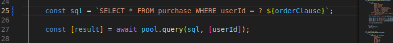
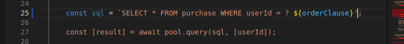
DEF-003: SupplierRoute POST Has No Error Handling
Origin
Source-code review.
Details
POST /Supplier/ directly awaits supplier creation without local try/catch handling. If validation or duplicate checks fail, the API may return an uncontrolled server error instead of a structured 400 or 409 response.
Fix applied: supplier creation is now wrapped in try/catch. The route uses error.statusCode || 500, returns a structured JSON error body, and still preserves the previous success behavior.
DEF-004: Login Route Hardcodes Status 500
Origin
Functional/API error-handling review.
Details
The login route returns 500 for invalid login cases. Wrong password, unknown username, and missing credentials should be client/authentication failures.
Expected statuses:
- Missing username/password:
400 Bad Request - Wrong username/password:
401 Unauthorized - Unexpected backend failure:
500 Internal Server Error
Fix applied: the login route now uses error.statusCode || 500, the same pattern used by the registration route.
Verification:
- Wrong username/password returns
401 Unauthorized. - Missing credentials returns
400 Bad Request. - Functional suite passed with
36/36tests.
Evidence
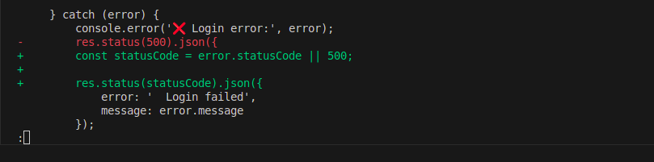
DEF-005: Mass Assignment Allows Any User to Register as Admin
Origin
Security test ST-005.
Details
The security test attempts to register with role: "admin" in the request body. Public registration should not accept privileged fields from the client.
Fix applied: public registration no longer trusts userData.role. UserFactory.createUser() always creates normal users with role user; privileged admin creation must happen through the separate createAdmin() path.
Verification from k6:
```text
ST-005 Mass Assignment: 201 ... "role":"user"
✓ ST-005 mass assignment does not grant admin role
```
Evidence
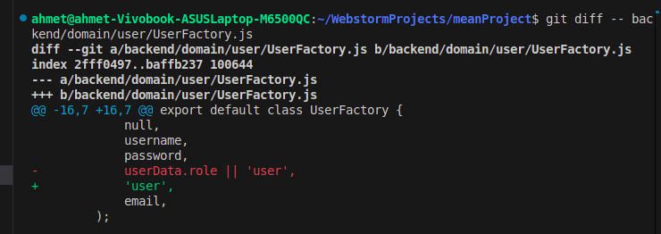
DEF-006: /User/users Exposes All User Data Without Authentication
Origin
Security test ST-007 and route review.
Details
GET /User/users should require authentication and admin authorization. Public access can expose user data and support account enumeration.
Expected behavior:
- Unauthenticated request:
401 Unauthorized - Authenticated non-admin request:
403 Forbidden - Admin request: safe user list only
Fix applied: /User/users now uses requireAdmin, which returns 401 for unauthenticated users and 403 for users without sufficient privileges.
Verification from k6:
```text
ST-007 Unauth User List: 401 - {"error":"Authentication required"}
✓ ST-007 user list requires authentication
```
Evidence
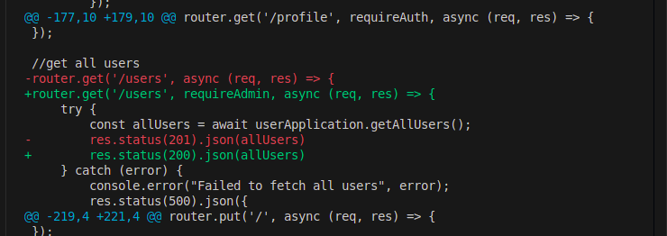
DEF-007: XSS Payload Stored in Database Without Sanitization
Origin
Security test ST-003.
Details
The security test sends <script>alert("xss")</script> as a username. The application should reject or sanitize this input before storage/display.
Fix applied: the Username value object now rejects < and > characters, preventing script-tag usernames from being stored.
Verification from k6:
```text
ST-003 XSS Registration: 400 - {"error":"Registration failed","message":"Username contains invalid characters"}
✓ ST-003 XSS payload in username is handled
```
Evidence
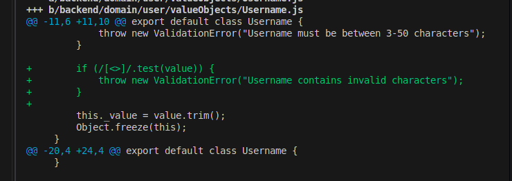
DEF-008: Missing Security Headers
Origin
ZAP scan.
Details
ZAP reported missing or weak security headers:
| Header issue | Risk | Evidence |
|---|---|---|
| CSP missing no-fallback directives | Medium | Content-Security-Policy: default-src 'none' without frame-ancestors and form-action |
X-Content-Type-Options missing | Low | /Product/ response does not include nosniff |
X-Powered-By exposed | Low | Response contains X-Powered-By: Express |
Fix applied:
app.disable('x-powered-by')X-Content-Type-Options: nosniffContent-Security-Policy: default-src 'self'; frame-ancestors 'none'; form-action 'self'- Custom JSON
404handler so missing routes such as/robots.txtno longer fall back to Express's default CSP.
Verification from header check:
```text
HTTP/1.1 404 Not Found
X-Content-Type-Options: nosniff
Content-Security-Policy: default-src 'self'; frame-ancestors 'none'; form-action 'self'
```
Evidence
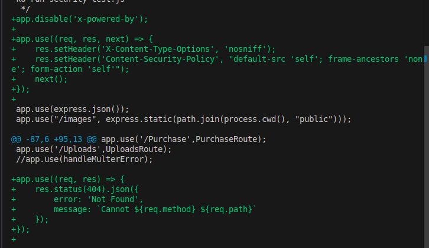